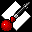

|
 Rasterizer
What is Rasterizer : Rasterizer is utility that renders hi-resolution screenshots of Fusion objects (up to 16000x16000 pixels provided Rasterizer has enough free memory).
System requirements : To be able to use Rasterizer, you need:
Version history : 1.1 Support for Fusion 3.1 file format.
Download Rasterizer!
Rasterizer may be freely distributed by online services, bulletin boards, shareware collection CDs or non-profit user groups, as long as it is not modified. This software may not be included in any commercial package without the authorization of French Touch.
Other related softwares : To create 3D objects for Rasterizer, you need to download the real-time 3D editor from French Touch: Fusion. It's a free program and is available on the Fusion web site: http://www.french-touch.net/fusion.
|